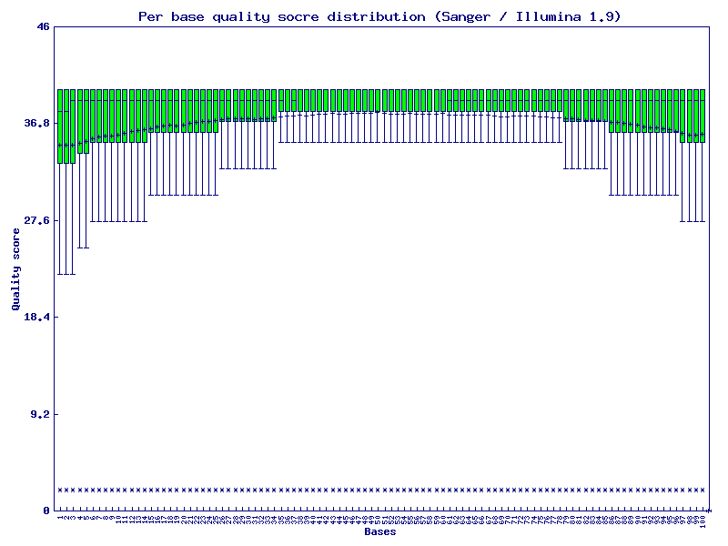
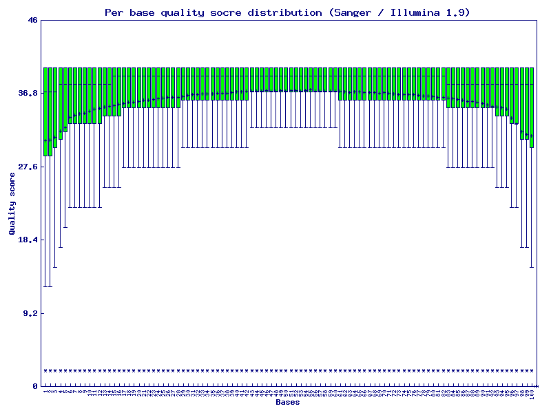
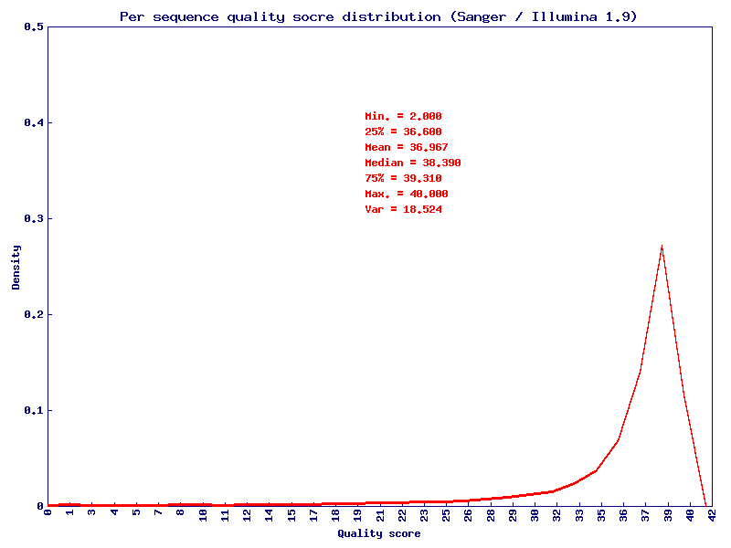
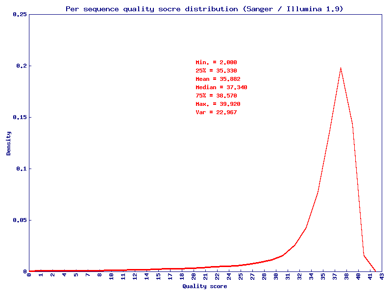
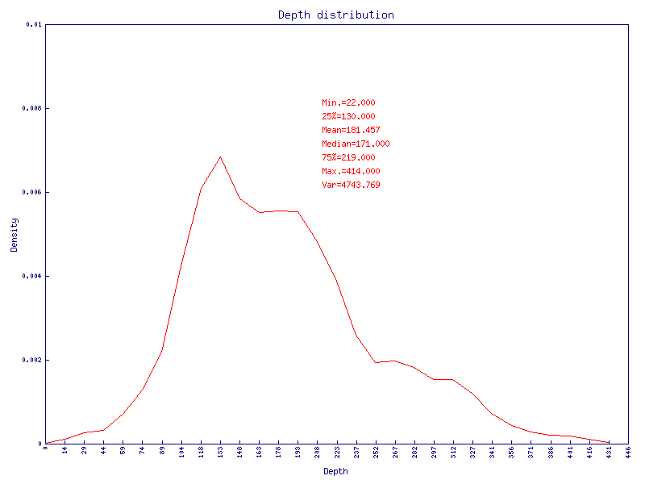
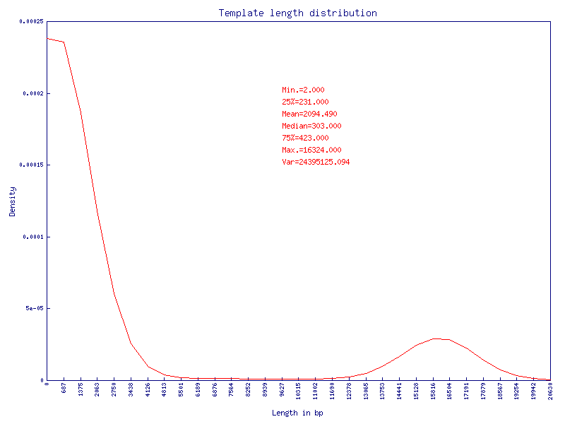
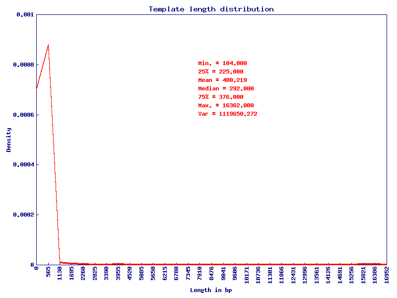
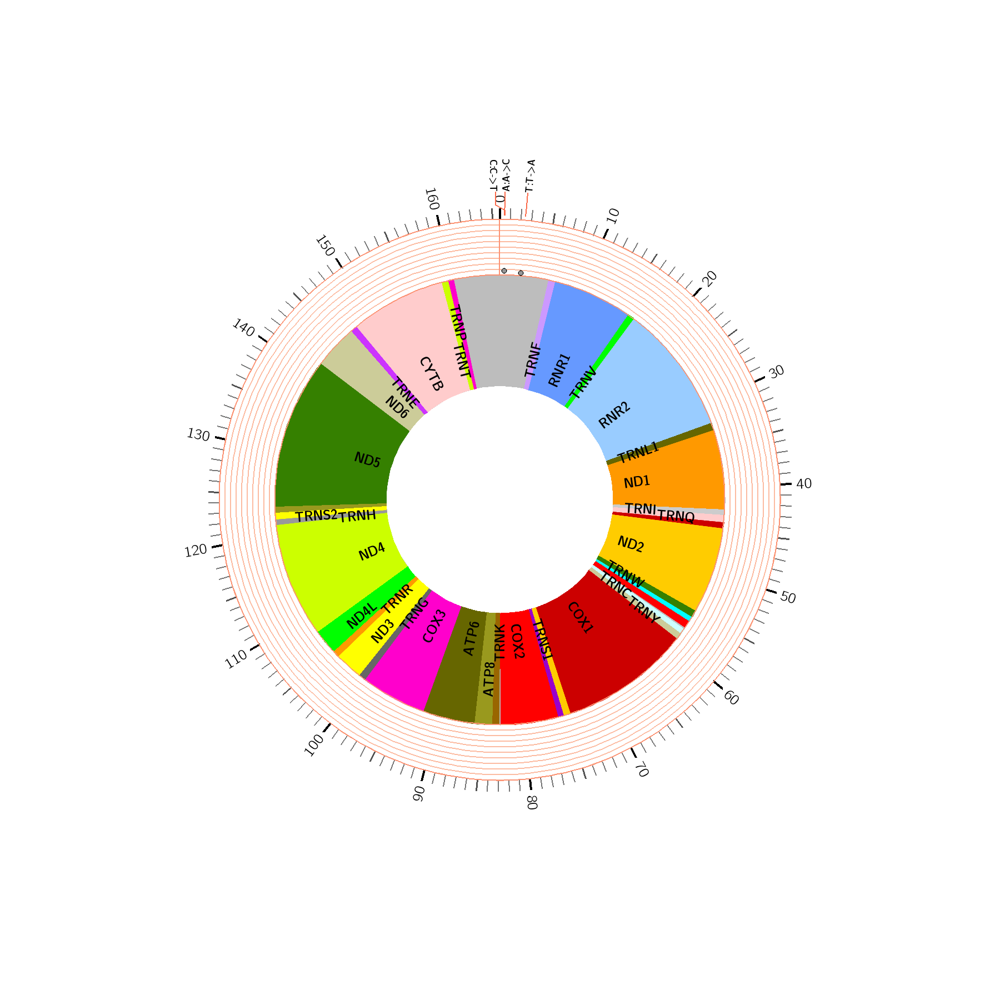
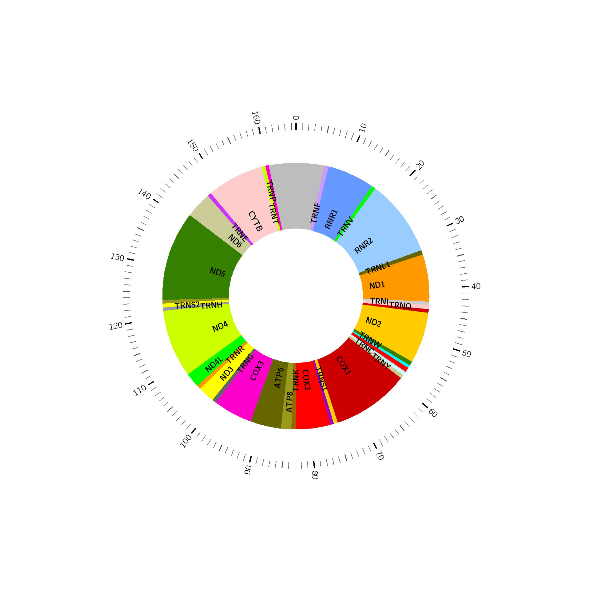

Command
Your command for generating this report, keep it in order to reproduce the result.
perl mitoSeek.pl -i Examples/brca_tumor.bam -j Examples/brca_normal.bam -t 4 -sb 0 -hp 1 -d 5 -str 4 -sp 1 -sa 0
QC
Quality control (QC) is applied to the mapped reads on mitochondria. If -L [bed] is provided, the QC report following is constrained to your provided region. The QC report contains the following 4 parts.
Percent of base pairs covered
Tumor
| #Covered bases | Total bases | Coverage |
|---|---|---|
| 16569 | 16569 | 1.000 |
Normal
| #Covered bases | Total bases | Coverage |
|---|---|---|
| 16569 | 16569 | 1.000 |
Per base quality
The y-axis on the graph shows the quality scores and the x-axis on the graph shows the positions in the fastq file. For each position a BoxWhisker type plot is drawn. The elements of the plot are as follows:
- The central blue line is the median value
- The green box represents the inter-quartile range (25-75%)
- The upper and lower whiskers represent the 10% and 90% points
- The blue '+' mark represents the mean quality
- The blue '*' mark outside the upper and lower whiskers represents the outlier points
- Tumor
- Normal
Mapping quality
The y-axis on the graph shows the density and the x-axis on the graph shows the mapping quality scores. The mapping quality score is stored in the 5th column of a SAM/BAM file. It equals to -10log10Pr{mapping position is wrong}, rounded to the nearest integer. A summary of the mapping score is also included in the middle of the plot.
- Tumor
- Normal
Depth distribution
The y-axis on the graph shows the density and the x-axis on the graph shows the depth. A summary of the depth is also included in the middle of the plot.
- Tumor
 Normal
Normal
Template length distribution
The y-axis on the graph shows the density and the x-axis on the graph shows the template length. The template length is stored in the 9th column of a SAM/BAM file. It is set as 0 for single-segment template or when the information is unavailable. A summary of the template depth is also included in the middle of the plot.
- Tumor
- Normal
Heteroplasmy
Heteroplasmy detection threshold is defined on two scales: read count (-ha) and read percentage (-hp). Read count denotes the number of reads we must observe to support heteroplasmy while read percentage denotes the percentage of reads we must observe to support heteroplasmy. Both scales can be used together or individually. The minimum recommended depth requirement (-d) for detecting heteroplasmy is 50. Lower depth will severely damage the confidence of heteroplasmy calling.
 Tumor
Tumor- Normal
Tumor
| #chr | pos | ref | forward_A | forward_T | forward_C | forward_G | reverse_A | reverse_T | reverse_C | reverse_G | heteroplasmy | 95%ci_lower | 95%ci_upper | major_allele | minor_allele | major_allele_count | minor_allele_count | gene | genedetail | exonic_function | aminochange | strand_bias | pathogenic_variants | diseases | links | fisher.pvalue | fisher.adjust.pvalue | fisher.phred.score | empirical.probability | empirical.phred.score |
|---|---|---|---|---|---|---|---|---|---|---|---|---|---|---|---|---|---|---|---|---|---|---|---|---|---|---|---|---|---|---|
| MT | 83 | T | 1 | 27 | 0 | 0 | 0 | 7 | 0 | 0 | 0.029 | 0.000 | 0.085 | T | A | 34 | 1 | 1.250 | 0.49748743718593 | 0.57106633726171 | 3.03217881812157 | 0.92749844785724 | 11.3965269577631 | |||||||
| MT | 153 | A | 40 | 0 | 0 | 1 | 20 | 0 | 0 | 0 | 0.016 | 0.000 | 0.047 | A | G | 60 | 1 | 1.488 | 0 | 0 | 255 | 0.895500208491736 | 9.80884576030444 | |||||||
| MT | 217 | T | 0 | 52 | 1 | 0 | 0 | 13 | 0 | 0 | 0.015 | 0.000 | 0.044 | T | C | 65 | 1 | 1.245 | 0.49748743718593 | 0.57106633726171 | 3.03217881812157 | 0.88866803250946 | 9.53380115886782 | |||||||
| MT | 290 | A | 52 | 0 | 0 | 0 | 21 | 0 | 0 | 1 | 0.014 | 0.000 | 0.041 | A | G | 73 | 1 | 3.364 | 0.49748743718593 | 0.57106633726171 | 3.03217881812157 | 0.877306837394021 | 9.11179638782632 |
Normal
| #chr | pos | ref | forward_A | forward_T | forward_C | forward_G | reverse_A | reverse_T | reverse_C | reverse_G | heteroplasmy | 95%ci_lower | 95%ci_upper | major_allele | minor_allele | major_allele_count | minor_allele_count | gene | genedetail | exonic_function | aminochange | strand_bias | pathogenic_variants | diseases | links | fisher.pvalue | fisher.adjust.pvalue | fisher.phred.score | empirical.probability | empirical.phred.score |
|---|---|---|---|---|---|---|---|---|---|---|---|---|---|---|---|---|---|---|---|---|---|---|---|---|---|---|---|---|---|---|
| MT | 45 | A | 12 | 0 | 1 | 0 | 0 | 0 | 0 | 0 | 0.077 | 0.000 | 0.222 | A | C | 12 | 1 | 0 | 0.49748743718593 | 0.578533669200836 | 3.03217881812157 | 0.949701421881426 | 12.9844429176287 | |||||||
| MT | 48 | C | 0 | 1 | 12 | 0 | 0 | 0 | 0 | 0 | 0.077 | 0.000 | 0.222 | C | T | 12 | 1 | 0 | 0.49748743718593 | 0.578533669200836 | 3.03217881812157 | 0.949701421881426 | 12.9844429176287 | |||||||
| MT | 98 | C | 0 | 0 | 10 | 1 | 0 | 0 | 3 | 0 | 0.071 | 0.000 | 0.206 | C | G | 13 | 1 | 1.273 | 0.49748743718593 | 0.578533669200836 | 3.03217881812157 | 0.948791680099711 | 12.9065947274992 | |||||||
| MT | 99 | T | 0 | 10 | 0 | 1 | 0 | 4 | 0 | 0 | 0.067 | 0.000 | 0.194 | T | G | 14 | 1 | 1.364 | 0.49748743718593 | 0.578533669200836 | 3.03217881812157 | 0.947872429244105 | 12.8293251355163 | |||||||
| MT | 195 | C | 0 | 3 | 3 | 0 | 0 | 0 | 2 | 0 | 0.375 | 0.040 | 0.710 | C | T | 5 | 3 | 1.333 | 1 | 1 | 0 | 0.996589612721687 | 24.6719630039632 | |||||||
| MT | 239 | T | 1 | 17 | 0 | 0 | 0 | 2 | 0 | 0 | 0.050 | 0.000 | 0.146 | T | A | 19 | 1 | 1.111 | 0.49748743718593 | 0.578533669200836 | 3.03217881812157 | 0.943133590971359 | 12.451441954912 |
Structural Changes
MitoSeek reports mitochondria structural changes when pair-end sequencing data is given as input. During alignment, a portion of the read-pairs will be discordantly mapped, meaning one read of the pair is aligned to mitochondria and the mate pair is aligned elsewhere. Such reads are like to be the results of alignment errors from homologous regions between mitochondria genome and other genomes. However, they could also indicate mitochondria integration into other genomes which has been reported to be possible by multiple studies. Only those structural changes with >=n (-str) spanning reads support will be outputed.
Tumor
| #MitoChr | MitoPos | VarChr | VarPos | SupportedReads | MeanMappingQuality | Mito.gene | Mito.genedetail |
|---|---|---|---|---|---|---|---|
| MT | 12491 | 18 | 57409214 | 4 | 37.000 | ND5 | MTND5:mRNA:12338-14149:(+) |
| MT | 13733 | 1 | 84732689 | 4 | 37.000 | ND5 | MTND5:mRNA:12338-14149:(+) |
| MT | 14258 | 4 | 190283382 | 5 | 37.000 | ND6 | MTND6:mRNA:14150-14674:(-) |
| MT | 14307 | 2 | 37264955 | 4 | 37.000 | ND6 | MTND6:mRNA:14150-14674:(-) |
| MT | 15635 | 4 | 107157488 | 4 | 37.000 | CYTB | MTCYB:mRNA:14748-15882:(+) |
| MT | 16258 | 9 | 79954746 | 4 | 37.000 | ||
| MT | 1881 | 3 | 175892782 | 4 | 37.000 | RNR2 | MTRNR2:rRNA:1673-3230:(+) |
| MT | 2148 | 5 | 142435648 | 6 | 37.000 | RNR2 | MTRNR2:rRNA:1673-3230:(+) |
| MT | 2535 | 1 | 186031615 | 4 | 37.000 | RNR2 | MTRNR2:rRNA:1673-3230:(+) |
| MT | 2860 | 8 | 88779528 | 5 | 37.000 | RNR2 | MTRNR2:rRNA:1673-3230:(+) |
| MT | 3293 | 6 | 49473486 | 5 | 37.000 | TRNL1 | MTTL1:tRNA:3231-3305:(+) |
| MT | 5276 | 3 | 166684781 | 4 | 37.000 | ND2 | MTND2:mRNA:4471-5512:(+) |
| MT | 5445 | 6 | 48117465 | 4 | 37.000 | ND2 | MTND2:mRNA:4471-5512:(+) |
| MT | 7656 | 10 | 70097532 | 5 | 23.000 | COX2 | MTCO2:mRNA:7587-8270:(+) |
| MT | 8472 | 7 | 67572745 | 4 | 37.000 | ATP8 | MTATP8:mRNA:8367-8573:(+) |
| MT | 8624 | 2 | 138884146 | 4 | 37.000 | ATP6 | MTATP6:mRNA:8528-9208:(+) |
| MT | 9095 | 12 | 66638827 | 4 | 23.000 | ATP6 | MTATP6:mRNA:8528-9208:(+) |
Normal
| #MitoChr | MitoPos | VarChr | VarPos | SupportedReads | MeanMappingQuality | Mito.gene | Mito.genedetail |
|---|---|---|---|---|---|---|---|
| MT | 10910 | 17 | 33331463 | 5 | 37.000 | ND4 | MTND4:mRNA:10761-12138:(+) |
Somatic Mutation
MitoSeek takes the input bam provided by -i as tumor while the other input bam by -j as its control normal. We propose to compare the empirical allele counts between tumor and normal control directly instead of using a genotype caller. MitoSeek can extract empirical allele count for every mitochondria position then compare the allele counts between tumor and normal to determine somatic mutation status. Two parameters (-sp and -sa) control the somatic mutation detection.
- 
| #chr | pos | ref | tumorGenotype | tumorDepth | normalGenotype | normalDepth | Mito.gene | Mito.genedetail |
|---|---|---|---|---|---|---|---|---|
| MT | 83 | T | T|A | 34|1 | T | 13 | ||
| MT | 153 | A | A|G | 60|1 | A | 16 | ||
| MT | 217 | T | T|C | 65|1 | T | 19 | ||
| MT | 290 | A | A|G | 73|1 | A | 24 |
Relative Copy Number Estimation
Two methods are implemented in MitoSeek to estimate the relative copy number of mithochondria, namely 'byRead' and 'byDepth'.
byRead
CN=Rm/Rt, where Rm is the reads aligned to mitochondria and passed quality filter and Rt is the total reads passed quality filter.byDepth
CN=Dm/Dt, where Dm is the average depth of mitochondria, and Dt is the average of exome or whole genome, depending on your input data.File list
File list description
| Category | File Name | Description |
|---|---|---|
| QC | percent_of_base_pairs_covered_table1.txt | Percent of base pairs covered (Tumor) |
| percent_of_base_pairs_covered_table2.txt | Percent of base pairs covered (Normal) | |
| per_base_quality1.png | Per base quality plot (Tumor) | |
| per_base_quality_table1.txt | Data for per base quality plot (Tumor) | |
| per_base_quality2.png | Per base quality plot (Normal) | |
| per_base_quality_table2.txt | Data for per base quality plot (Normal) | |
| mapping_quality1.png | Mapping quality plot (Tumor) | |
| mapping_quality_table1.txt | Data for mapping quality plot (Tumor) | |
| mapping_quality2.png | Mapping quality plot (Normal) | |
| mapping_quality_table2.txt | Data for mapping quality plot (Normal) | |
| depth_distribution1.png | Depth distribution plot (Tumor) | |
| depth_distribution_table1.txt | Data for depth distribution plot (Tumor) | |
| depth_distribution2.png | Depth distribution plot (Normal) | |
| depth_distribution_table2.txt | Data for depth distribution plot (Normal) | |
| template_length_distribution1.png | Template length distribution plot (Tumor) | |
| template_length_distribution_table1.txt | Data for template length distribution plot (Tumor) | |
| template_length_distribution2.png | Template length distribution plot (Normal) | |
| template_length_distribution_table2.txt | Data for template length distribution plot (Normal) | |
| Heteroplasmy | mito1_heteroplasmy.txt | Heteroplasmy result (Tumor) |
| mito2_heteroplasmy.txt | Heteroplasmy result (Normal) | |
| circos/mito1_heteroplasmy_circos.png | Circos plot of heteroplasmy result (Tumor) | |
| circos/mito2_heteroplasmy_circos.png | Circos plot of heteroplasmy result (Normal) | |
| circos/mito1_heteroplasmy_circos.conf | Configure file for circos plot of heteroplasmy result (Tumor) | |
| circos/mito2_heteroplasmy_circos.conf | Configure file for circos plot of heteroplasmy result (Normal) | |
| circos/mito1_heteroplasmy_circos.text.txt | Data file (text labels) for circos plot of heteroplasmy result (Tumor) | |
| circos/mito2_heteroplasmy_circos.text.txt | Data file (text labels) for circos plot of heteroplasmy result (Normal) | |
| circos/mito1_heteroplasmy_circos.scatter.txt | Data file (scatter plots) for circos plot of heteroplasmy result (Tumor) | |
| circos/mito2_heteroplasmy_circos.scatter.txt | Data file (scatter plots) for circos plot of heteroplasmy result (Normal) | |
| Structural Variants | mito1_structure_discordant_mates.txt | Structural changes of those discordantly mapped mate reads (Tumor) |
| mito2_structure_discordant_mates.txt | Structural changes of those discordantly mapped mate reads (Normal) | |
| mito1_structure_large_deletion.sam | Structural changes of those reads mapped with candidate large deletions (Tumor) | |
| mito2_structure_large_deletion.sam | Structural changes of those reads mapped with candidate large deletions (Normal) | |
| Somatic Mutation | mito_somatic_mutation.txt | Somatic mutation result |
| circos/mito_somatic_mutation_circos.png | Circos plot of somatic mutation result | |
| circos/mito_somatic_mutation_circos.config | Configure file for circos plot of somatic mutation result | |
| circos/mito_somatic_mutation_circos.text.txt | Data file (text label) for circos plot of somatic mutation result | |
| Others | m.bed | User provided region (bed format) or mitoSeek detected mitochondrial genome region |
| mito.fasta | Mitochondrial geneome reference file in fasta format | |
| mito1.bam | Mapped reads in mitochondrial genome (Tumor) | |
| mito2.bam | Mapped reads in mitochondrial genome (Normal) | |
| mito1.pileup | Pileup file on mithochondrial genome (Tumor) | |
| mito2.pileup | Pileup file on mithochondrial genome (Normal) | |
| mito2_basecall.txt | Parsed result of pileup file on mithochondrial genome (Tumor) | |
| mito2_basecall.txt | Parsed result of pileup file on mithochondrial genome (Normal) |
{kind=link}
{kind=link}
{kind=link}
{kind=link}
{kind=link}
{kind=link}
{kind=link}
{kind=link}
{kind=link}